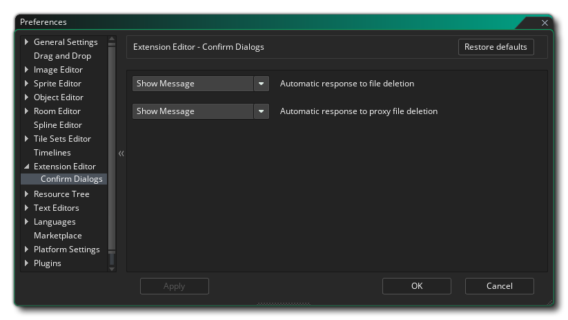

Les préférences de l' éditeur d'extension couvrent quelques options liées aux messages qui vous sont montrés lors de son utilisation, avec les détails exacts ci-dessous:
- Réponse automatique à la suppression du fichier: Le paramètre par défaut ici est d'afficher un message vous demandant si vous êtes sûr de vouloir supprimer, mais vous pouvez le régler sur "OK" afin que toutes les suppressions soient effectuées sans ce message comme si vous aviez cliqué déjà.
- Réponse automatique à la suppression du fichier proxy: Comme ci-dessus, cela contrôle le message que vous affichez lors de la suppression de tous les fichiers proxy.